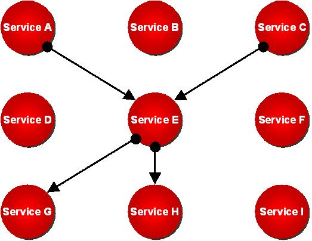
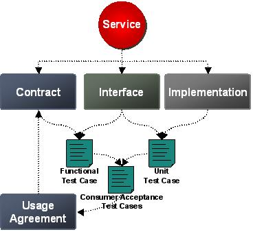

OUM |
Technique Overview |
||
Method Navigation |
Current Page Navigation |
||
|
|
||||||||
The purpose of this technique is to provide guidance for SOA practitioners on techniques that can be used for service-based testing. It is expected that the reader is already confident with the contents of the Service Architecture technique and the SOA Service Lifecycle technique.
The document can be used as starting point to define a test strategy for SOA. Any engineer implementing services following OUM should be familiar with the content of this document.
Service Testing, when done effectively, provides the glue necessary to generate a quality service through the Service Delivery processes. It ensures that discipline is used to deliver services and provides the necessary validation required to ensure the contract has been realized through service delivery, prior to the service entering operational state through service deployment.
However, Service Testing does not conclude with the delivery of the service into production. Regression testing will be required throughout the operational life of a service. Further, the complete line of test assets for a service will be revisited on any future versions resulting from approved changes to the service.
There are two primary purposes behind service testing. The first is the obvious, which is to ensure that the completed service realizes the terms of the contract prior to deployment. The second purpose is to gather the necessary information to determine how the service will operate within its physical environment. This information is then used to determine the optimal deployment strategy for the service.
Service Testing also serves as the gates that must be passed before a service is allowed to proceed with production deployment, and in this regard is a governance structure. The purpose of service testing with respect to being a governance model is not only to ensure quality and consistency across service deliveries, but also to protect the operational environment into which the services will be deployed.
Iterations with Service Implementation may take place after each test cycle, and may even be required after production deployment when defects are found while a service is in its operational state (which would require an increment to the service version).
In the case of a new service entering service deployment, service testing provides the necessary information needed to make sound deployment decisions such as packaging and optimal configuration.
Any enterprise should have a Service Testing Strategy that should be incorporated in several points during service delivery. It starts from service definition and preparing the test criteria and plans, then design of the test cases along service design and implementation of the test cases in along service implementation. Test execution is a discipline on its own, and specific guidance on the test strategy and some testing guidelines are provided. This document provides an example test strategy for Service Testing.
SOA Testing Strategy - This technique can be used as an input to define a testing strategy for SOA, and test scenarios for Service Testing.
The technique describes what should be used as input to test plan production, the concept of continuous testing, and thereby what kind of tests are required during the Service Lifecycle, and finally what kind of testing environments are recommended for the various tests.
No. |
Step | Component | Component Description |
|---|---|---|---|
1 |
Determine Service Testing Approach. | Service Testing Approach | The Service Testing Approach describes what should be achieved by Service Testing, what should be the input for the production of service test scenarios and when they should be produced, what kind of information should be gathered during Service Testing, and how it should be gathered. |
2 |
Determine Testing Strategy for Services. | Testing Strategy | The Testing Strategy determines what type of tests should be performed during the Service Lifecycle. This component also considers what testing environments are needed for the different tests. |
Describe what should be achieved by Service Testing, and what assets should be the input for the production of service test scenarios. Also, determine what kind of information should be gathered during Service Testing, and how this information should be gathered and recorded.
Since good service design follows the practice of design by contract, it is also appropriate to apply test driven development practices within Enterprise Service Engineering. Practicing test driven development means the test developer builds the test suite independent of constructing the code that implements the service. If the same developer responsible for service implementation is also responsible for testing, then the test cases should be constructed prior to developing the code. This forces the test developer to build a test suite against the service contract instead of ending up with the typical “works as implemented” test.
Once service definition has been completed the service contract will be available. At this stage, service testing may commence for that service as the test criteria is available in the form of the service contract. This information allows for the creation of the test plan that should provide coverage for all of the following areas within the service contract:
Constructing the test plan independent of the service design and service implementation is a key enabler of the “Test by Contract” strategy. This strategy requires that the test team understands the contract within its business context, and formulate a test strategy around validating the requirements of the contract. This contrasts with many testing methods where the test team constructs their testing strategy by having conversations with the delivery team, which results in testing against the delivery team’s interpretation of the contract, which has never been a goal of testing; however in many cases it seems to be the reality.
Determining the Acceptance Criteria is pretty simple. It is the service contract. In some cases it may not be completely possible to realize the full contract as it is stated, at least within a reasonable timeframe. In these scenarios, changes to the contract must be justified and approved by the SOA Leadership team in conjunction with the business in order to achieve acceptance. If agreement cannot be reached, then additional work must be done to realize the contract as stated, or the service must be abandoned.
In the event that the service is abandoned, then the dependant projects will become responsible for implementing the functions they required from the service as part of their own delivery effort. In these cases, the implementation assets should be transferred to the ownership of the project delivery teams. If this scenario becomes common, then the Service Identification process should be reworked with more stringent justification criteria to prevent unrealistic services from entering service release planning and delivery.
Once Service Design completes, the physical interface will be available to begin the construction of the physical test cases. Since the test plan was constructed independent of the service design work, the test case preparation may also be used to validate the interface’s completeness in fulfilling the functional requirements of the contract. Defects should be opened against the service interface if gaps are found while preparing the test cases. Members from the service design team will then be assigned to address the defects.
As services are part of more or less complex communication dependencies, interface testing across all dependencies is needed to build the confidence that there is no need to “retest the world” every time a change is made.

In the figure above, Service H has Service E as direct consumer and Service E is used by Service A and Service C. If Service H is now changed, this might have impact not only on Service E but indirectly on Service A and Service C as well. The challenge is to create the trust that if Service H is tested in the scope of Service E, this will be sufficient for the whole scenario.
Integration testing is often used to test across all dependencies and therefore creating test scenarios of high complexity. By defining a good service based test strategy with testing by contract against the interface, integration testing can concentrate on project scope integration again.
The secondary goal behind service testing is to gather information, with respect to the impact the service will have when operating within its physical environment. This information is valuable for doing infrastructure planning, as well as troubleshooting and managing the collection of services operating in production.
This information is gathered by running a series of tests against the service while in an isolated environment. An isolated environment provides an environment where the operations of the service are tested independently of all other products or technologies running on the same environment. These tests should be run with linearly increasing load that begins with a light load, and completes prior to maximizing the machine. The following statistics will be available when these tests are run correctly:
The general model for setting up this series of test follows:
Determine the type of tests that you will execute to ensure that the services are properly tested throughout the Service Lifecycle. You should also consider what testing environments are needed for the different tests.
Continuous testing integrates testing as automatic task during the service lifecycle and therefore helps to ensure a good quality on each stage in the process.
To enable continuous testing, the deployment of the services must be made on a shared infrastructure, which must be mirrored for integration testing, and be available throughout the service delivery process. The test environment should follow the hardware and software architecture of the production environment to allow the usage of a scaling factor in capacity calculations.
The environment could be owned by project teams or be provided as shared infrastructure.
If the project team is responsible to set this environment up, continuous testing can be implemented and managed by the project itself at the costs of setting up and running the environment. At every update of the infrastructure in the production environment, all projects having a corresponding test environment must update it accordingly, or at least perform tests for calculating the new scaling factor. Therefore providing this environment as a shared infrastructure is preferable.
In order to provide a shared integration test environment, every system owner must provide and manage a test version of their system. Projects can deploy and test their services to the shared test system as needed. But execution of capacity, load and performance tests must be synchronized across the projects. Therefore a central testing team should take over the test management for all services and implement a test environment allowing for automatic test execution. The team can then prioritize, combine and schedule the test sequences for test execution. Managing the testing centrally reduces infrastructure and back-end system integration costs.
For continuous testing, it is important to implement an automated test environment. In traditional software development, test automation is often limited to the developer unit tests while manual testing is done for all other forms of testing. This strategy is also very common when an offshore delivery model is employed. Service oriented development has smaller, more frequent software deployments. Having to perform a full manual testing cycle each time a service is modified, improved, or extended leads to extensive software testing efforts and associated lengthy timelines.
Consumers of the service must be assured that the service is robust. Preferable therefore, all test cases should be automated and test data should be managed in a test case database. In addition an automated initialization process for the testing environment should be set up. Such a process should initialize all dependent systems (e.g. databases, back-end systems, etc.) on each new test sequence. Then all tests in a test plan can build upon each other and as a combination will provide real world execution flows. Publishing test results will create the confidence needed to build reuse on services.
Service testing, when done effectively, ensures that the service fulfils all contracts linked to the service before being transitioned to production.
Every time a new version of a service is delivered, testing must be repeated on the new version. For that purpose regression testing will be required. In addition, other services or components hosted on the same system may change over time. As those changes can have an impact on services, for instance on consumption of shared resources like memory and CPU, continuous system integration testing is a good practice in SOA.
There are two primary purposes behind service testing. The first one is obvious: to ensure that the completed service realizes the terms of the contract and all the requirements. The second purpose is to understand how the service will operate within its physical environment. This information is then used to determine the optimal capacity of the underlying systems required to fulfill all usage agreements.

The test cases used in each test cycle vary depending on the scope of the test. Test cases should be created for every service for each of the following categories and are further explained below:
The different test cases that are needed during the test cycle can be split into three categories that are described in more details as follows:
Unit Test
Unit tests are quite common in the IT industry and are used to validate the functionality of a unit of work, in this case a service. They are used to test the interface as well as the implementation. A unit test is designed in a way that allows testing of the unit without the full integration environment, e.g., without the need to access other services. This enables the development team to check the quality of the service implementation without having to setup a complete integration environment. As these tests can be executed automatically and can run in the local development environments they should be integrated into the automated build process.
If the same developer is responsible for the implementation of the unit test and the implementation of the service itself, the unit test scripts should be developed first. From a quality perspective however, it is best if that the developer of the service is not the one developing the unit test scripts.
If several services are packaged together and combined in one common build process, all unit tests of all services in the package should be executed on each build. This will help to check that changes do not impact other services. This is particularly important if services share the same libraries.
To check the overall quality of the unit tests themselves, the code coverage of the test should be measured.
Function Test
Function tests are designed from a business perspective and are used to ensure that the software delivers to the expectation and requirements of the business. This includes testing the “happy path” as well as exceptions and error situations. Function tests use the SOA shared infrastructure (for example service bus and service registry) and simulate consumers of the service.
A QA or test team is responsible to design the function tests. The function tests together must cover the full scope of the service and therefore needs to be based on the contract and the interface of the service. For each new version of the service, the function tests must be adapted. Therefore, a function test may be assigned to exactly one or several versions of the service.
Function tests are used in integration, load and performance tests to simulate different scenarios. A function test can be selected to automate an acceptance test in the name of a consumer.
Acceptance Test
User acceptance tests (UAT) are typically used for end user acceptance and are often performed manually. A consumer acceptance test (CAT) is comparable to a UAT but for services, the user is replaced by a service consumer. A CAT checks the service in the context of a specific consumer. Consumer acceptance tests are acceptance tests that are automated and executable within the integration test environment.
The owner of a consumer can implement its own acceptance test and then provide it to the QA team for integration into the test system. The QA team then reviews the test and checks it fits the contract, usage agreement and interface. If no special acceptance tests are provided, the consumer can select one or several of the existing function tests to be used instead. Otherwise, the default set of function tests defined by the QA team will act as CAT for the consumer.
Consumer acceptance tests are used in load and performance tests to simulate the expected load from the consumer. In addition, the tests are used to check the automatic migration to a new service version. It is strongly recommended that owners of consumers should carefully select the test cases.
The main tests in support of SOA service testing are as follows:
Developer Service Test
The implementer of the service performs all unit tests he has created within his local development environment. The developer should not be able to update the service implementation in the change management system as long as he has not successfully run the developer test. The developer test helps development to validate the design and implementation of the service.
Service Regression Test
The implementer of the service performs regression tests as part of the automated build process in the Integration Test Environment. Running all functional tests of the former version of the service will validate compatibility in functionality and running all consumer acceptance tests for that service version will validate compatibility with consumers.
Service Isolation Test
The implementer of the service performs continuous integration testing as part of the automated build process in the Integration Test Environment. Running unit tests and functional tests in isolation against the interface of the service will help developers measure their progress. Repeating isolation tests on the Performance Test Environment will support the project team in capacity planning. The results will provide the operations team with a baseline for SLA monitoring. They will also allow the calculation or refinement of the projected resource consumption on the shared service infrastructure (e.g., service bus).
Service Integration Test
A tester performs integration testing in the Integration Test Environment. To enable continuous integration testing, the Integration Test Environment should be made available for this purpose on a regular basis, for example every weekend. Every system should be tested by combining all unit tests and function tests into one large test scenario. The results must be validated to ensure interoperability and loose coupling.
Service Load and Performance Test
A tester performs load and performance tests for each system in the Performance Test Environment on request. The test sequence combines test cases to execute performance, stress, reliability and volume testing. With this test scenario, the load is simulated for normal situations as well as for peak times. All acceptance tests, selected as consumer acceptance tests, will be combined based on the usage agreements registered for the services. This is needed to ensure the system is able to fulfill all contracts and usage agreements of all services and to validate overall quality including scalability.
Service Consumer Migration Test
A tester performs migration tests for all existing services that are introducing a backward compatible version as part of a release. The test should be performed in the Integration Test Environment to validate that automatic migration of consumers is working as expected and fulfills the individual contracts. For each service, all acceptance tests, selected as consumer acceptance tests, of all consumers to be migrated will be combined in one test scenario to run against the new service version. A service can claim to be backward compatible only if it has successfully passed the full migration test.
Failover Test
A tester performs failover tests in the pre-production or User Acceptance Test Environment. This test involves testing failure of the service infrastructure and ensuring the service can recover gracefully. For stateful or transactional services, this means checking data is not duplicated, lost or corrupted and that the service can recover in case of failure of the underlying infrastructure. For stateless, non-transactional services this means verifying the underlying systems in the call tree that may be stateful, does not get corrupted or in an inconsistent state. For very truly idempotent services, such as read-only services with not side effects, this test may not be required. Because these tests are sometimes difficult to automate and therefore costly to perform, they may be run in a bulk for a number of services at regular intervals (for example once a month) rather then systemically.
Other Tests
This list is not exhaustive. Other tests may be required for certain type of services. The service requirements should form the basis of any service test plan and any unusual requirements should be identified. In some cases a specific type of testing might be required. For example services exposed to a large number of third parties or the internet should undergo a rigorous security test, including denial of service testing.
For each service, a test strategy combining the various test cases in a number of test scenarios should be defined. Test cases and test scenarios should be registered with the enterprise repository. Refer to the IT Asset Management technique for suggested meta models for test scenario and test case. The test strategy can be defined by creating a set of test scenarios for a service documenting this through relationships. Each test scenario will use relationships to the various test cases allowing for test cases being reused in several test scenarios.
It is important not only to manage test artifacts at design time but also to publish test results to allow consumers and potential consumers to be assured of the quality of the service. Therefore, test scenarios as managed by the enterprise repository should link to test results from the last test execution.
There are no templates available to assist with this technique.
This technique is recommended for use in the following OUM tasks:
| Task | Usage |
|---|---|
| Use this technique to review the concept of service-based testing. | |
| Use this technique to determine the testing requirements for Service Testing. | |
| Use this technique to determine the testing strategy for Service Testing. | |
| Use this technique to determine the approach for integration testing. | |
| Use this technique to determine the approach for unit testing. | |
| Use this technique to determine the approach for unit testing. | |
| Use this technique to determine the approach for integration testing. | |
| Use this technique to determine the approach for system testing. | |
| Use this technique to determine the approach for user acceptance testing. | |
| Use this technique to determine the testing strategy for service load and performance testing. |
Use the following criteria to check the quality of this technique:
Are the following test cases as a minimum been created for every service, a unit test, a function test, and a consumer acceptance test?
Are the descriptions of the test cases registered in the Enterprise Repository, to allow for reuse in several scenarios?

Copyright © 2006, 2016, Oracle and/or its affiliates. All rights reserved.